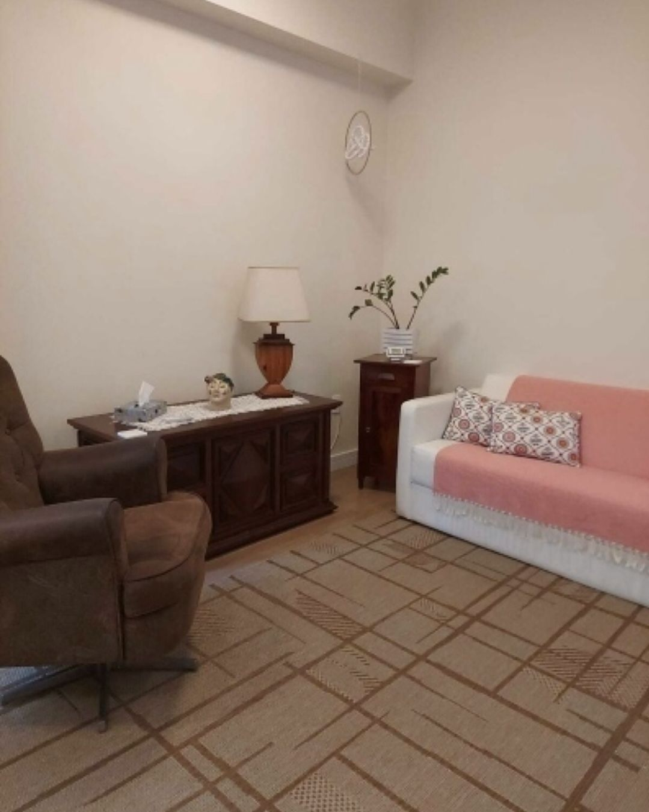

Um tempo seu, para falar sem pressa
Psicoterapia individual em consultório na Praça XV de Novembro, no Centro de Florianópolis.
Psicóloga Yda Cristine Pereira Barcellos · CRP 12/01827
Às vezes, o que pesa precisa de espaço
Há fases em que tudo parece acontecer ao mesmo tempo, e fica difícil entender o que se sente. Não é preciso ter uma resposta pronta para procurar ajuda.
Na terapia, você encontra uma escuta atenta e um lugar seguro para pensar sobre o que está vivendo, no seu ritmo.
Você não precisa saber por onde começar. A conversa começa de onde você estiver.
Escuta
Atenção ao que você traz, no seu tempo e sem julgamentos.
Sigilo
O que é dito na sessão fica na sessão, como prevê o Código de Ética do Psicólogo.
Tempo próprio
Cada processo segue o seu ritmo, sem pressa e sem fórmula pronta.
O que acontece na terapia
A psicoterapia é um encontro regular com uma profissional preparada para escutar. Falar sobre o que incomoda com alguém de fora da sua rotina pode ajudar a:
- Perceber o que se repete
- Dar nome ao que se sente
- Encontrar outras formas de lidar com o que acontece
Cada processo é único. O ritmo, os temas e o tempo de cada pessoa são respeitados.
Como funciona
- Atendimento presencial no Centro de Florianópolis, na Praça XV de Novembro
- Sessões individuais, em consultório
- Primeiro contato pelo WhatsApp ou por telefone
- Dia e horário combinados na conversa
- Sigilo profissional, como prevê o Código de Ética do Psicólogo
Yda Barcellos
Psicóloga Yda Cristine Pereira Barcellos · CRP 12/01827
Yda Barcellos é psicóloga e atende em consultório no Centro de Florianópolis.
O trabalho parte da escuta: dar atenção ao que cada pessoa traz, com cuidado e sem pressa, para que ela possa pensar sobre a própria história com mais clareza e no próprio tempo.
No Centro, na Praça XV
As sessões acontecem em uma sala reservada e tranquila, no Centro de Florianópolis, de frente para a Praça XV.
Centro, Florianópolis/SC · 88010-400

Como começar
Mande uma mensagem
Pelo WhatsApp ou telefone, no (48) 99919-7754. Pode ser uma mensagem curta.
Combine um horário
Vocês combinam o dia e o horário da primeira sessão.
Primeira sessão
No consultório da Praça XV. Um primeiro encontro para se conhecerem e conversar sobre o que trouxe você até ali.
Perguntas frequentes
Onde fica o consultório?
Na Praça XV de Novembro, 153, sala 203, Centro, Florianópolis/SC.
Ver no Google MapsComo marco a primeira sessão?
Mande uma mensagem pelo WhatsApp ou ligue para (48) 99919-7754 e combine o dia e o horário com a Yda.
O atendimento é presencial?
Sim. As sessões são individuais, no consultório do Centro.
Qual é o valor da sessão?
O valor e a forma de pagamento são combinados na primeira conversa, pelo WhatsApp.
O que eu falar fica em sigilo?
Sim. O sigilo é um dever da psicóloga, previsto no Código de Ética Profissional do Psicólogo.
Quando você quiser, é só escrever
Uma mensagem basta para começar. Tire suas dúvidas e combine a primeira sessão pelo WhatsApp.